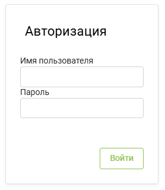

Руководство пользователя JTI
Здесь находится база знаний JTI.
Начало работы
Авторизация
Чтобы войти в личный кабинет, перейдите по ссылке. Сайт — система с авторизованным доступом, поэтому первое знакомство с ним начнётся с формы авторизации.

В форме введите свои учётные данные — логин и пароль. В случае утери пароля можно воспользоваться функцией восстановления доступа.
Успешный вход
После успешной авторизации система запомнит вас и повторный ввод данных не потребуется, если вы используете то же устройство и браузер.
Обзор интерфейса
После входа в панель, откроется главный экран Личного кабинета. В дальнейшем будем называть его ЛК.
Панель инструментов
В верхней части экрана расположены два элемента управления: слева «спрятана» боковая панель, а справа находится профиль. Чтобы открыть боковую панель, нажмите на кнопку .
Боковая панель содержит следующие разделы:
- Справочники
- Админка
- Сервисы
- Задачи техников
- Склад заявки
- Склад документы
- Склад операции
- Отчёты
- Документооборот
- Отчёты по FTP
Форматирование таблиц
Эти инструменты работают для любых таблиц на сайте:
- Верхний столбец таблицы можно перемещать.
- Всю таблицу можно перенести в Excel.
- Ненужные вам столбцы можно убрать: нажмите на кнопку в правом верхнем углу и затем перенесите столбец в появившееся окно в правом нижнем углу.
Матрица ответственности
Следующая таблица — инструмент для управления отношениями в команде. Она распределяет ответственность, полномочия и роли.
| Задача | Координатор | Бригадир | Кладовщик | Менеджер по складам | Техник |
|---|---|---|---|---|---|
| Прием и размещение товара на складе | I | I | R | A | I |
| Организация погрузочно-разгрузочных работ | C | R | C | A | I |
| Подготовка техники к эксплуатации | A | I | I | I | R |
| Проведение инвентаризации | A | C | C | R | I |
| Координация логистических процессов | R | C | I | A | I |
| Редактирование документа | R | C | I | A | I |
| Проводка документа | R | C | I | A | I |
На пересечении задач и исполнителей ставят буквы, которые обозначают роли в проекте и степень ответственности. Из этих букв состоит аббревиатура RACI:
- R (responsible) — исполнитель задачи или подзадачи проекта. Тот, кто самостоятельно выполняет все работы в рамках задачи. Если задача масштабная, у неё может быть несколько исполнителей.
- A (accountable) — ответственный за всю задачу. Участник с этой ролью несёт ответственность за то, чтобы задачу завершили в срок, но не обязательно выполняет её сам. Часто A-участники назначают задачи и подзадачи R-участникам. Важно, чтобы у одной задачи был только один ответственный. При этом сам ответственный может быть одновременно и исполнителем.
- C (consult) — эксперт, который консультирует команду по вопросам, находящимся в его компетенции. Он не выполняет задачу, но даёт советы и рекомендации, которые помогают выполнить её эффективнее.
- I (informed) — участник проекта, который должен быть в курсе выполнения задачи. Результат задачи или всего проекта влияет на дальнейшую деятельность I-участников, поэтому им важно следить, что происходит.
Техник
Как внести отчёт о проделанной работе
Во вкладке Задачи техников выберите "Задачи исполнителей". Это список торговых точек, где вам нужно выполнить сервисы по монтажу, демонтажу, перемещению или ремонту.
Даты
Обращайте внимание на столбцы с датами: создания, завершения по плану и завершения по факту. Чтобы отфильтровать торговые точки по конкретной дате, нажмите на или пропишите дату в поле напротив .
Статусы задачи
- В работе — вносите отчёты в задачи только с таким статусом
- На одобрении
- На доработке
- Завершена — проанализирована координатором и принята как выполненная.
Загрузка информации
-
Дважды кликните на торговую точку, где планируется загрузка отчёта. Отобразится задача и все плановые сервисы, которые должны быть выполнены по этому адресу.
Статус акта
Перед тем как продолжить, обязательно выберите один из трёх статусов акта: акт подписан; акт не составлен; акт составлен, но не подписан. Нажмите кнопку
«Сохранить». -
Затем дважды кликните на строку с сервисом. Откроются поля для загрузки информации и добавления комментариев. Заполните их.
-
Чтобы загрузить фото акта, нажмите на кнопку
«Акт приёма-передачи (Выдача/Возврат)»и выберите файл из нужной папки. Либо вручную перетащите файл в это поле. - В поле
«Фотоотчёт полностью (все документы и фото выполненных работ)»загрузите все фотографии по этому сервису. - Нажмите кнопку
"Сохранить"в самом низу. - Так делаем со всеми сервисами, которые были заказаны и выполнены в данной торговой точке.
После этого сервис переходит в статус «На одобрении» и ожидает подтверждения или отклонения со стороны координатора.
Отклонение — это перевод в статус «На доработке». Координатор отклоняет сервис, если в отчёте отсутствует какая-либо информация или данные внесены не по регламенту для полевого персонала.
Дополнительная услуга
Если в торговый точке выполнен дополнительный сервис по просьбе ЛПР или торгового представителя JTI, то нажмите на кнопку «Добавить сервис». Название оборудования указано на наклейке внутри шкафа.
Различия по наименованию оборудования
Указывайте фактическое наименование оборудования, которое вы монтировали или демонтировали в торговой точке, если оно отличается от планового. Плановое оборудование отображается в соответствующем поле при загрузке отчётной информации в сервис.
При внесении отчётных данных обратите внимание на фактическое оборудование, с которым вы работали (проверьте QR-код и наклейки). Если плановое название оборудования в сервисе не соответствует фактическому, замените его на актуальное название, с которым выполнялись работы.
Проблемы
Если какой-либо сервис из списка не был выполнен в торговой точке (например, из-за отказа ЛПР или выполнения сервиса ранее) или если все сервисы не были выполнены (например, торговая точка закрылась или ЛПР отказался от сервисов), следуйте инструкциям:
- Если отказался один сервис, выберите его, поставив галочку в соответствующем поле.
- Нажмите на кнопку/поле «Выберите проблему» и выберите подходящую проблему из выпадающего списка.
- Подтвердите выбор, нажав кнопку
Сохранить проблему.
Если все сервисы в торговой точке были отклонены, визит считается холостым. В этом случае выполните следующие шаги:
-
Поставьте галочку напротив любого из сервисов, выберите поле «Выберите проблему» и выберите из выпадающего списка «Холостой визит». Укажите причину холостого визита и нажмите кнопку
Сохранить проблему. -
Напротив двух остальных сервисов также поставьте галочки, откройте поле «Выберите проблему», выберите вариант «Удалить сервис» и нажмите кнопку
Сохранить проблему.
Холостой выезд
Загружайте фотографии только для сервисов с проблемой «Холостой выезд». Для сервисов, отмеченных на удаление, фотографии не нужны.
Координатор
Упаковка сервиса в задачи
В разделе Сервисы нажмите на «Сервисы JTI». Перед вами окажется таблица со списком сервисов.
Сервисы могут быть трёх цветов:
- Жёлтые — имеют надпись "Срочно" в столбце "Срочность"
- Синие — до плановой даты завершения осталось до трёх дней
- Красные — всё, что просрочено хотя бы на один день
Их необходимо упаковать в задачи. Для этого правой кнопкой мыши нажмите на интересующий сервис и в открывшемся меню выберите «Сформировать задачу».
Создание задачи
В открывшемся окне заполните следующие поля:
- Координатор
- Бригадир
- Исполнитель
- Склад
После заполнения всех полей нажмите на зелёную кнопку "Создать".